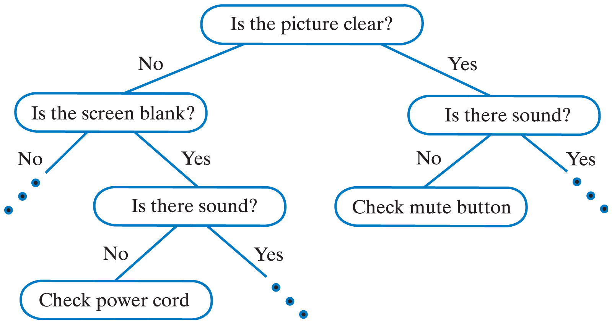
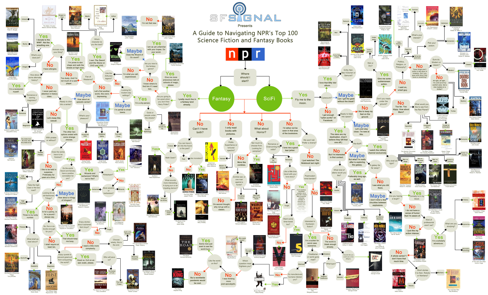
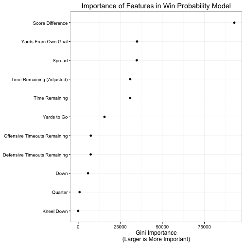
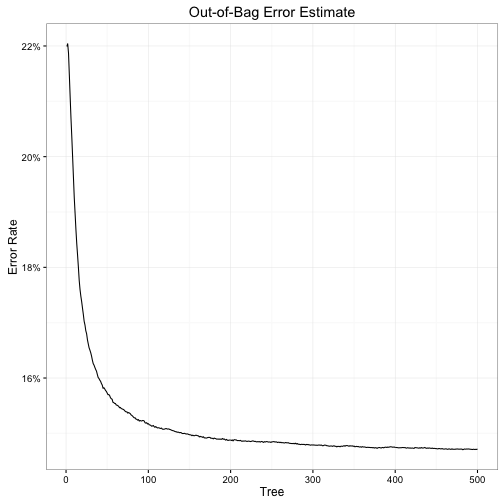
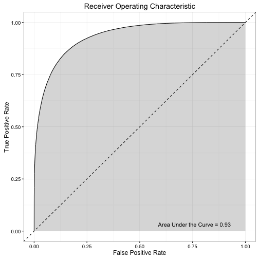
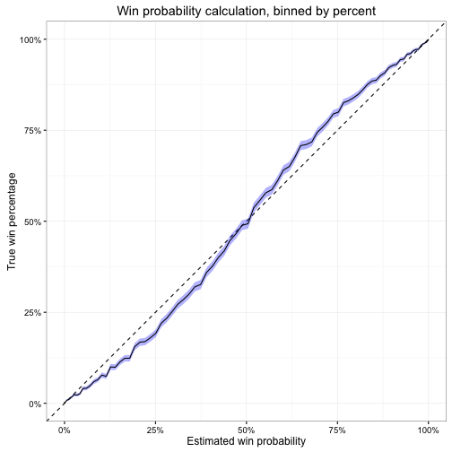
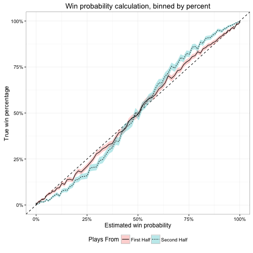
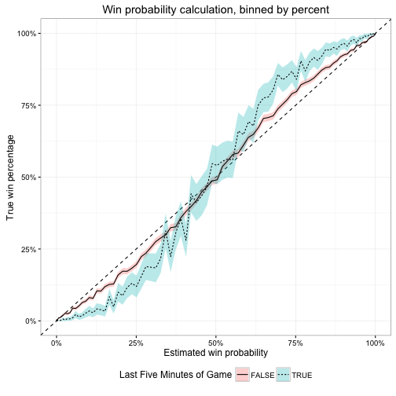

Valuing Timeouts in Football (Part II)
Last week I examined how one can use logistic regression to estimate the value of a timeout, with minimal success. I promised a better way to estimate this value which frees us from some of the inherent limitations to logistic regression, mainly that the value of timeouts are linear (e.g. the difference in win probability from 3 to 2 timeouts is the same as from 2 to 1) and constant (e.g. having 3 timeouts at the start of the third quarter is the same WP value as having 3 timeouts with 5 minutes left in the game).
Random forests are an alternative method for classifying events based on a number of known features. At its heart, random forests are a collection of decision trees. A decision tree is something everyone should be familiar with. Essentially it is a flow-chart one uses to make a decision. At each decision point, or node, the user answers a question and proceeds down a specific branch of the tree. This process repeats until you reach a conclusion. Decision trees can be relatively basic, or inherently complex. For example, this is a decision tree used to troubleshoot a broken television.

Notice that it contains just a few nodes where each node is a binary yes/no question. We don’t have to limit ourselves to just yes/no questions, but sometimes they can be surprisingly effective. Of course, decision trees can also be complex with a plethora of nodes.

Random forests build on this by harnessing the power of multiple trees. As its name suggests, the model is constructed using a forest, or a set of multiple trees. Each tree is grown using a random sample of observations from the data. By randomly sampling observations with replacement (that is, allowing the same row of data to be selected multiple times), each decision tree will have different branches and use different variables to grow the tree. For our purposes here, to predict whether or not a team will win a game given the current game state, we run the current features of the game (e.g. time, down, distance, field position) through the forest. Each tree makes a classification (i.e. win or lose), and we tally up the predictions from each tree to see which outcome was predicted most frequently. We can then use this as either the raw prediction (win or lose) or calculate the fraction of votes for “win” which is our estimated win probability.
One of the most important steps in creating a random forest model is selecting which features to use in classification. For win probability, this means identifying what features of the game that we have recorded can be used to predict game outcomes. Most existing models include information such as score, time remaining, field position, down and distance to go, etc. This allows us to make predictions for similar plays: if we know how teams have performed in similar situations previously, there’s a good chance teams will continue that trend in the future.
I admit that my approach is not groundbreaking or earth-shattering. What I feel makes it novel is that I also incorporate the number of timeouts remaining in the game. If timeouts are important to win outcomes, then including this feature in the WP model should improve our accuracy at predicting wins and losses (not to mention, answering the original question - whether it is better to take a timeout or a delay of game penalty).
The features I include in my model are:
- Down
- Distance to go
- Field position (yards from own goal)
- Time remaining (because of the non-linear impact of time remaining, I include two versions of this variable – both the raw number of seconds remaining in regulation, as well as the square root of seconds remaining)
- Quarter
- Score difference
- Spread
- Offensive timeouts remaining
- Defensive timeouts remaining
- Kneel down (a binary indicator of whether or not the offensive team can simply take a knee and run out the clock to win the game)
The model is estimated using the randomForest package for R. I used the Armchair Analysis dataset, which I prepared for analysis using the rnflstats package. I include all plays in the regular season from 2002-14 and exclude any games which end in ties. In the model, rather than trying to predict the WP based on home/away teams I am trying to predict the WP of the team currently on offense. The number of trees included in the model is determined by the researcher; while more trees is better, there is a diminishing margin of returns in model accuracy while also increasing the computational time necessary to estimate all the trees. Through trial and error, I ended up with 500 trees.
Feature Importance
One of the first questions to ask is how important is each feature to predicting wins and losses. That is, some variables will probably be more helpful than others in explaining why teams win or lose. We can describe this using the average decrease in the Gini impurity criterion. Larger values indicate a specific feature/variable reduces prediction errors, and is thus more important to making correct classifications. Note that this does not allow us to compare potential play outcomes and decide which improves our expected WP the most; for that we will need to be a bit more specific.

Here we see how important each feature is to the WP model. Score difference is most important, which makes intuitive sense – the team with the most points at the end of the game wins, so having more points than the other team is a good predictor of winning. The next most important features are field position and the spread, followed closely by time remaining. Again, these all make pretty clear sense. The closer you are to your own goal, the less likely you are to score any points on this possession; fewer points = lower probability of victory. The spread is also a good measure of relative team strength. We know that home teams overall win more frequently than away teams, so we could simply adjust for home/away team status. But we also know that some teams are just better than others. While its true that on Any Given Sunday any team has a chance to win, its also the case that some animals are more equal than others. Odds-makers already account for this when they set the betting spread, so we can use these spreads as a proxy for relative team strength. For example, teams which are favored to win by 7 points are expected to win more frequently than teams who are 7 point underdogs so in our WP model we expect favorites to have a higher WP than underdogs. Time remaining is also key because as it decreases, teams’ WP should be more stable – there is simply less time for teams to mount comebacks or blow leads.
After accounting for these four features, the remaining factors in the model are much less important to predicting wins and losses. Down and distance to go are helpful to some extent, but not as much as knowing the difference in score. For a single drive, if we are trying to predict the number of points a team will score in that drive down and distance to go will probably be strongly significant. Given the same field position, teams playing a first and 10 are going to score more often than a team facing third and 15 or even fourth and 10.1 However for win probability across an entire game, the current down and distance to go are simply less relevant. Same thing for knowing the quarter and whether or not the offense can take a knee. For quarter, I expect it is relatively unimportant because seconds left is a much finer-grained measure of time remaining than a blunt categorization such as dividing the game into quarters. For kneel down, I think this is just because so few plays in the data are actually kneel down situations (only 0.58%). When a kneel down is possible, it should be a strong predictor of WP. Outside of that scenario, it doesn’t provide much information.
Which brings us to timeouts. Offensive and defensive timeouts are relatively minor predictors of WP compared to other features. I don’t think this is surprising because they are a minor component to the game. A well-placed timeout can be potentially helpful, especially in short-time scenarios where the ability to stop the clock opens up potential play calls. However beyond limited scenarios, timeouts are not going to make or break a team’s chances of success. As such, when estimating win probability they simply will not provide as much information (and therefore improve the accuracy of the prediction) as other features.
Model Accuracy
To be of any value, a WP model must be accurate. That is, it needs to predict wins and losses and be consistently correct. Now of course, we cannot expect 100% accuracy across all plays. However if the model is only correct 50% of the time, it is no better than a coin flip.2 One of the better ways to evaluate model performance is through out-of-sample validation. The concept is to estimate a model using a portion of the data, known as the training data, and use that model to make predictions on the remaining data, or the test data. By withholding the test data from your original analysis, you avoid over-fitting the model. Over-fitting occurs when you tailor the model so specifically to your data that you actually describe the random error in the data rather than the true, underlying relationships. In avoiding this, we help ensure the WP model will work as accurately as possible in future games where we don’t yet have data.
Random forest models have naturally occurring test sets: in constructing each tree, the algorithm withholds one-third of the observations to evaluate model performance after each tree is grown. Known as the out-of-bag (OOB) data, we simply compare the win/loss predictions for the OOB data with their actual, observed outcome. The proportion of observations where our win/loss prediction is incorrect is therefore the OOB error rate. For this WP model, the OOB error rate is 14.72%. This means that for the withheld observations, the model incorrectly predicted either a win or a loss in 14.72% of plays.

Here we can also see the diminishing impact of the number of trees included in the random forest. The OOB error rate from just the first tree is relatively high at 21.99%, but drastically declines after the first hundred trees to 15.18% – a 30.98% reduction in error. However the next 400 trees improve very little over the first 100 trees, with just an additional 3.03% reduction.
We can also check to see how well our WP model performs at classification by assessing specific types of errors. There are two possible outcomes in this model: either the offense wins or it loses. If the model makes accurate predictions, when an offense wins a game all its plays from that game will be classified as wins (a true-positive) and when an offense loses a game all its plays from that game will be classified as losses (a true-negative). When the model predicts an offense will win the game and in fact the offense lost, then the model generated a false-positive. if the model predicts an offense will lose the game and in fact the offense won, then the model generated a false-negative.
| Predict-Win | Predict-Lose | |
|---|---|---|
| Actual-Win | True-Positive | False-Negative |
| Actual-Lose | False-Positive | True-Negative |
A common analysis of these results compares the true-positive and false-positive rates at different threshold levels. The threshold level is simply the cutoff for converting a probability (e.g. .2, .4, .6) into a prediction (e.g. lose, lose, win). The standard threshold is .5; any observation with a predicted WP above .5 is considered a “win” and anything below .5 is a “lose”. This threshold makes intuitive sense as people typically round decimals to the closest integer value, however we could make the threshold level anywhere between 0 and 1. At each of these thresholds we convert our probabilities to predictions, then calculate how many false-positives vs. true-positives we generated.

The above graph (known as a Receiver Operating Characteristic (ROC), or ROC curve) plots this comparison across a range of thresholds.3 The diagonal line represents what the curve would look like if for every threshold the model generated an equal rate of false and true-positives, and the area under this line would be .5. If the model made perfect predictions, then we would see a straight horizontal line at y = 1 (i.e. at every threshold the model always generates true-positives and no false-positives) and the area under the curve (AUC) would be 1. For a ROC curve, we want to maximize the AUC. The curve generated by this WP model is pretty good. The AUC is 0.93, which suggests the model does a good job maximizing true-positives while minimizing false-positives.
One other way we can examine model performance is to determine the calibration of our estimated probabilities. What does it mean if for a given play the model generates a WP of .6? What exactly does this tell us? We might say that this means the offense has a .6 probability, or 60% chance, of winning the game. Or if the offense had the opportunity to run this exact play in the exact same game situation 100 times, then we expect they would win the game 60 out of that 100 times. Obviously this cannot occur in real-life – a time gets one chance at each play, and that’s it.4 But across all plays which have .6 WP, we should expect roughly 60% of them to result in wins. Or for plays with a .3 WP, we should find 30% of them result in wins.

We would like to see a strictly linear relationship between expected and actual win percentage. Instead, we get an odd pattern at the extremes. The WP model overestimates win probability when the estimated WP is below 50% and underestimates win probability when the predicted WP is above 50%. That is, offenses underperform the model when expectations are low and overperform the model when expectations are high. This pattern is similar to Trey Causey’s findings – which is not terribly surprising since most of my code/analysis is currently based on his work. However, my confidence intervals are much smaller since I am relying on OOB error estimates rather than the traditional approach of dividing the data into training and test sets before estimating the random forest model. In addition, while his errors were asymmetrical (his model performed more accurately for higher estimated probabilities than lower ones) my model seems to be a bit more consistent at both extremes.
Why does this occur? Because the model does not predict all plays equally. It’s better at predicting some plays than others. While this is by no means an exhaustive investigation, I can say that the model is (paradoxically) better at predicting plays earlier in the game than later. Below is the same type of calibration plot, but splits the predictions between first and second half plays. Notice that the over and under-confidence of the WP model is larger for second half plays than for the first half.

In particular, I believe the breakdown is the result of systematic errors for last minute plays. Below, compare the calibration for plays from the final five minutes of the game vs. all other plays.

Here, the swing at the extremes is even larger than the first/second half difference. I think this is because teams have such different playing styles in this time period compared to the rest of the game. Offenses may be in a hurry-up tempo as they try to mount a comeback, or alternatively are trying to slow things down and milk the clock while holding onto their lead. During the vast majority of the game they are not playing the same style, but since the vast majority of plays (89.03%) occur outside this five minute window, the WP model expects teams to behave the same way. Hence leading to over or under-confidence.
Takeaways
At this point we now have a working WP model which incorporates timeouts to predict game outcomes. Perfect? No. Adequate? I would say yes. Next time I’ll move on to evaluate how important timeouts actually are in game situations.
Footnotes
I presume – certainly worth following up on in a future post.↩︎
Again using the OOB predicted probabilities of all the plays in the data.↩︎
Even if there is a penalty, the offense can replay the down but it is not the exact same thing. They may have changed field position, they might change their play call, the defense will react different, etc.↩︎